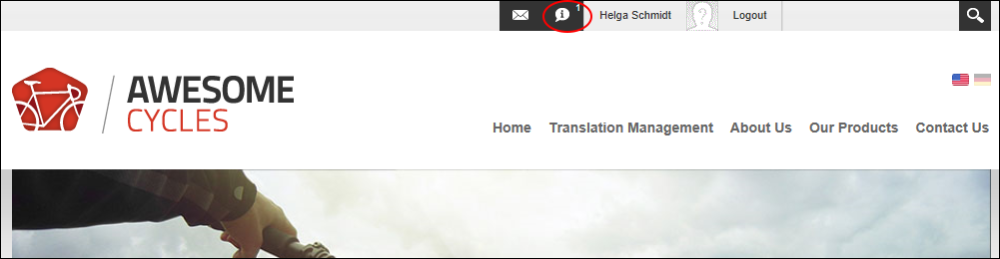
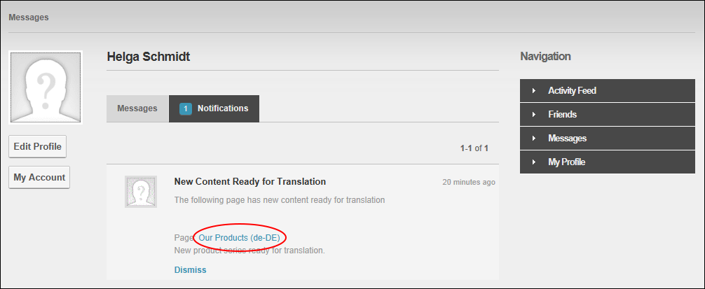
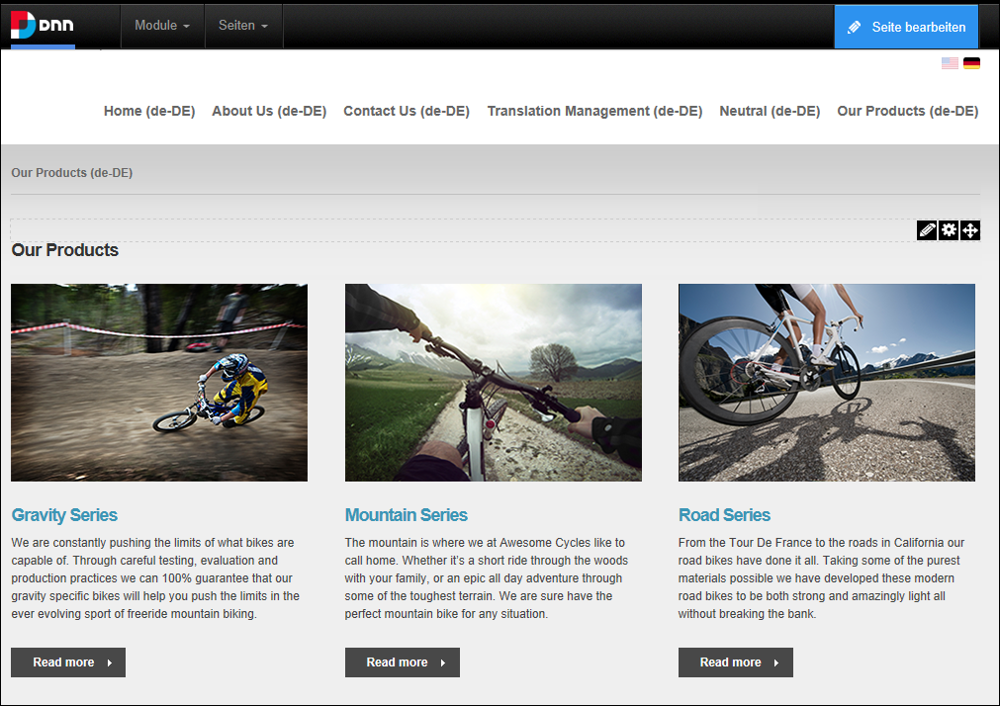
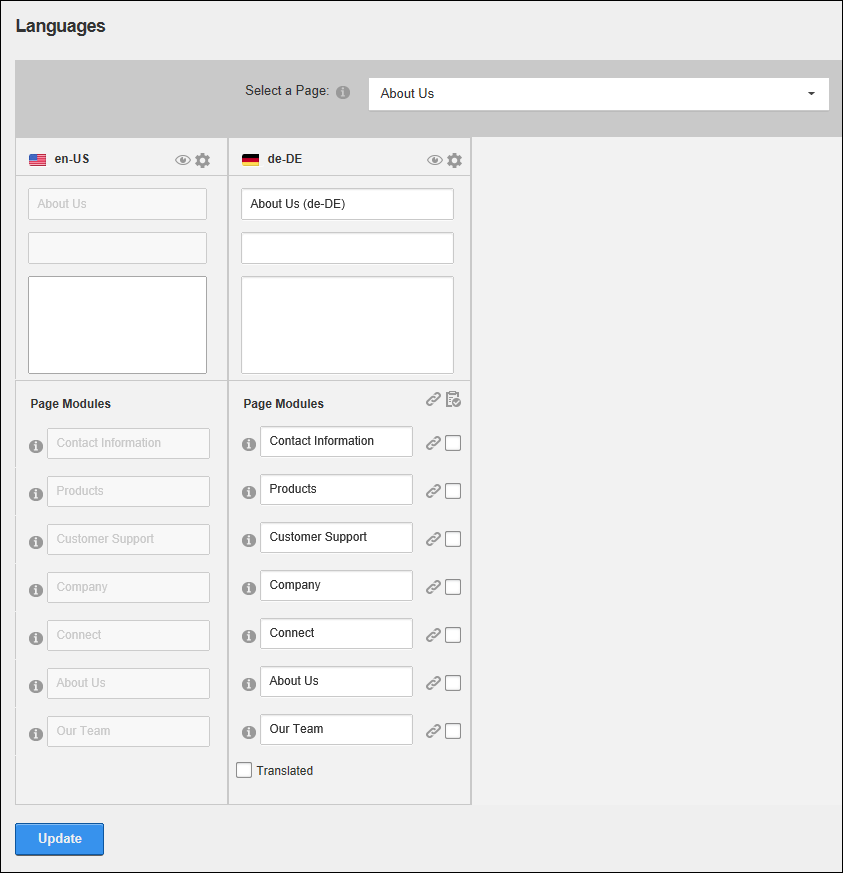
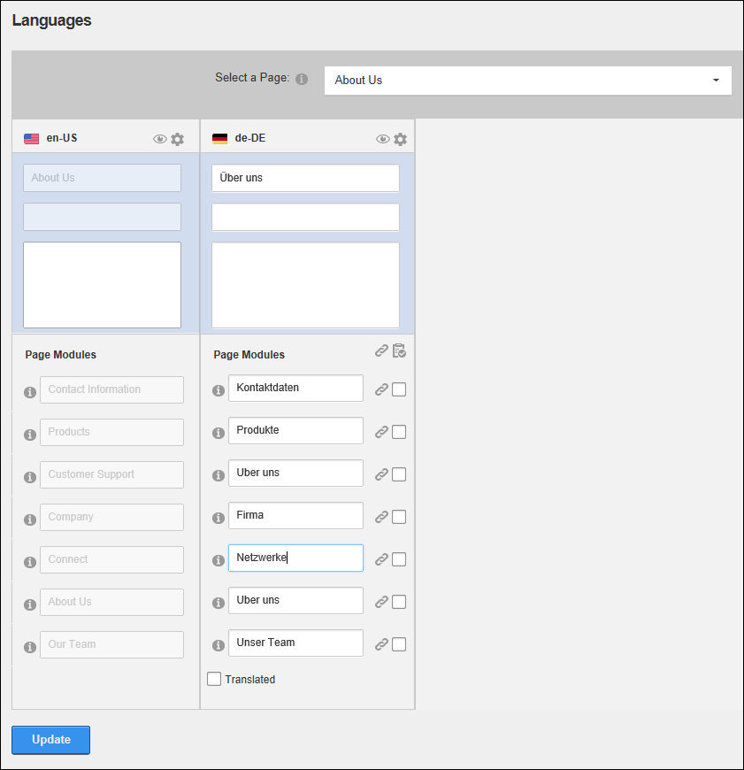

Translating a Page
How to fully translate all translatable elements of a page into a language other than the default language. Translators are able to translate the page name, page title, page description and the titles and the content of any translatable modules.
A user must belong to one or more translator roles to translate pages for one or more languages.
Translating a Page directly on the Page
- Login to your user account. See "Logging into a Site". Note: The language flag for the site you are a translator for is now displayed above the control panel.
- Click the Check Notifications button to view details of waiting translations. As a translator, you will receive a message whenever content is awaiting translation. See "Viewing a Message"

- Select the Notifications tab and locate any notifications titled "New Content Ready for Translation".
- Click on the linked Page Name to go to the page that requires translation. E.g. Our Products (de-DE)

- This will take you to the page that requires translation. Note that the page and module names are appended with the language (e.g. de-DE) that the content must be translated into. The DNN application is also automatically changed to this language.

- Translate the page and module titles in one of the following ways:
- Translate the Page Name, Page Title and Page Description fields (See "Page Details Settings for Existing Pages") and then translate all module titles (See "Configuring Basic Module Settings") on the page.
- Select Page Localization from the Edit Page menu of the ControlBar and translate the page name, page title and page description (top three fields) and then go to the Page Modules section and translate the module titles for each translatable module.
- Translate the content of any module that you are able to edit. Modules that cannot be edited use a copy the default language content. See "Editing Module Content"
Translating a Page using the Languages module
Once you have been notified of the page or pages that require translations, you can use the Languages module to manage translations.
- See Steps 1-3 above to identify the page or pages that require translations.
- Navigate to Admin > Advanced Settings >
 Languages - OR - Go to a Languages module.
Languages - OR - Go to a Languages module.
- At Select a Page, find or select the required page.

- Translate the page name, page title and page description (top three fields) and then go to the Page Modules section and translate the module titles for each translatable module.

-
- Click the View Page
 button to go to the page and then translate module content. See "Editing Module Content"
button to go to the page and then translate module content. See "Editing Module Content"
-
See "Translating a Module"
Next Step: See "Setting a Page as Translated"